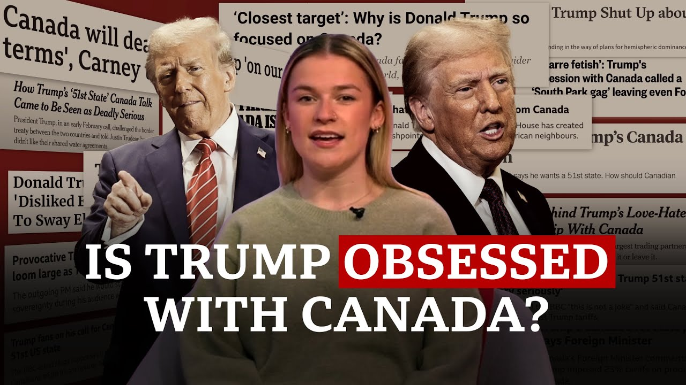

来B站一起耍【Global每日英语简报】
【特朗普真的想让加拿大成为第51个州吗？| BBC新闻】
Summary: The article explores President Trump's controversial remarks about annexing Canada, analyzing historical US-Canada relations, economic tensions, and geopolitical implications of such ambitions.
摘要： 文章探讨了特朗普总统关于吞并加拿大的争议言论，分析了美加历史关系、经济紧张局势以及这一野心的地缘政治影响。

⏱️ Estimated Reading Time: 13 min
Is President Trump actually obsessed with Canada?
特朗普总统真的对加拿大着迷吗？
He said he wants Canada to be part of the US, slap tariffs on it, and annoyed a load of Canadians in the process.
他表示希望加拿大成为美国的一部分，对其加征关税，并在此过程中激怒了许多加拿大人。
So, what is it about Canada and what's his end goal?
那么，加拿大有什么特别之处？他的最终目标是什么？
So, on the surface, the US and Canada have always had a pretty friendly relationship.
从表面上看，美国和加拿大的关系一直相当友好。
After all, Canada only borders the US.
毕竟，加拿大只与美国接壤。
If you look at a map, they draw an artificial line right through.
如果你看地图，两国之间划了一条人为的分界线。
It's just a straight artificial line.
那只是一条笔直的人为界线。
Somebody did it a long time ago.
很久以前有人划定了这条线。
Makes no sense.
这毫无道理。
The border between the US and Canada is the longest between two countries in the whole world.
美加边界是全世界两国之间最长的边界。
It's 8,891 km long.
它长达8,891公里。
It took a long time to finalize where it should be drawn, and in a little known treaty in 1908, it was finally confirmed.
确定边界位置花了很长时间，最终在1908年一项鲜为人知的条约中得到确认。
The US has actually tried to invade Canada before, more than once, but both failed attempts were ages ago.
美国实际上曾多次试图入侵加拿大，但两次失败尝试都是很久以前的事了。
And for centuries now, the relationship between the two has been good.
几个世纪以来，两国关系一直良好。
Great even.
甚至可以说非常好。
America is deeply fortunate to have a neighbor like Canada.
美国非常幸运能有加拿大这样的邻居。
So, what's been done to damage it then?
那么，是什么破坏了这种关系？
US President Donald Trump's return to the White House led to the biggest shift in the relationship between the two countries in decades.
美国总统特朗普重返白宫导致两国关系出现几十年来最大的转变。
At first, people literally thought he was joking when he suggested that Canada could become part of America, but he said it a lot since then.
起初，当他提出加拿大可以成为美国的一部分时，人们真的以为他在开玩笑，但此后他多次提到这一点。
To be honest with you, Canada only works as a state.
老实说，加拿大只适合作为一个州。
As a state, it would be one of the great states anyway.
作为一个州，它无论如何都会是一个伟大的州。
This would be the most incredible country visually.
这将是一个视觉上最令人难以置信的国家。
His his territorial views um that's never ever going to happen.
他的领土观点……嗯，这永远不会发生。
But besides all the talk, what has he actually changed?
但除了这些言论，他实际上改变了什么？
So remember when he was slapping these huge taxes on imports from other countries?
还记得他对其他国家的进口商品征收高额关税吗？
Well, he's put steep tariffs of 25% on Canada then.
当时他对加拿大征收了25%的高额关税。
Although he did later take them back.
尽管后来他取消了这些关税。
In March, he made it so that Canadians have to go through immigration control if they want to access the Haskell Free Library and Opera House which lies across the Vermont Quebec part of the border.
今年3月，他规定加拿大人如果想进入位于佛蒙特-魁北克边境的哈斯克尔免费图书馆和歌剧院，必须通过移民检查。
It used to be open to residents from both nations and it's always been seen as this symbol of cooperation between Canada and the US.
这里曾经对两国居民开放，一直被视为美加合作的象征。
So who came up with this agenda?
那么，是谁提出了这一议程？
The latest US and Canada fallout has been covered in this piece from our North America correspondent Anthony Zer.
我们北美记者安东尼·泽尔报道了美加关系的最新裂痕。
How long has Donald Trump been expressing an interest in taking over Canada?
特朗普对吞并加拿大表现出兴趣有多久了？
He brings it up over and over again.
他一次又一次地提到这一点。
There was one point where I asked him a question about trade in uh with the UK and he pivoted and started talking about Canada.
有一次我问他关于与英国贸易的问题，他却转而开始谈论加拿大。
Canada has huge supplies of rare earth metals, gold, oil, coal and lumber.
加拿大拥有大量稀土金属、黄金、石油、煤炭和木材资源。
The kind of natural wealth that some people say President Trump is after, including Canada's new Prime Minister, Mark Carney.
一些人认为特朗普总统觊觎的正是这种自然资源，包括加拿大新任总理马克·卡尼。
The Americans want our resources, our water, our land, our country.
美国人想要我们的资源、水、土地和国家。
America is not Canada, and Canada never ever will be part of America in any way, shape, or form.
美国不是加拿大，加拿大也永远不会以任何形式成为美国的一部分。
Although President Trump says that's not the case.
尽管特朗普总统表示并非如此。
We don't need their lumber.
我们不需要他们的木材。
We don't need their energy.
我们不需要他们的能源。
We have more than they do.
我们拥有的比他们多。
we don't need anything.
我们什么都不需要。
Geographically, uh they occupy obviously an area that that borders on the Arctic.
从地理上看，他们显然占据了与北极接壤的地区。
The Arctic is becoming could become a much more important region as global warming continues to move forward.
随着全球变暖持续加剧，北极可能成为一个更加重要的地区。
And it sounds like Canadians have pretty strong views on any discussions about becoming American.
听起来加拿大人对任何关于成为美国一部分的讨论都持强烈反对态度。
Absolutely not.
绝对不行。
Not a chance.
没门。
No.
不。
Yes, I could.
是的，我可以。
No.
不。
No, not at all.
不，完全不行。
So, what is it actually about then?
那么，这到底是怎么回事？
How do we know what the president is actually thinking behind closed doors?
我们如何知道总统在私下里的真实想法？
Yeah.
是的。
I talked with John Bolton who is Donald Trump's national security adviser and he did say Donald Trump fixates on ideas that things get into his head but there is no kind of a cohesive uh ideology behind there.
我与特朗普的国家安全顾问约翰·博尔顿交谈过，他说特朗普会执着于某些想法，但背后并没有一种连贯的意识形态。
The president doesn't really think that way and someone else could get in his ear sometime later.
总统并不真的那样思考问题，而且之后可能会有别人影响他的想法。
So if he really does mean it, if US territorial ambitions for Canada are real, then why?
所以如果他真是认真的，如果美国对加拿大的领土野心是真的，那为什么？
The US and Canada have had the closest of diplomatic, military, economic, and cultural ties for more than a hundred years.
一个多世纪以来，美国和加拿大在外交、军事、经济和文化上的联系最为紧密。
So why would the US put all of that at risk?
那么，美国为什么要让这一切面临风险？
Uh I posed a question to Michael Williams who is a professor at the University of Canada.
我向加拿大大学教授迈克尔·威廉姆斯提出了一个问题。
Uh and he said that Donald Trump's designs on Canada almost represent a kind of a 19th century geopolitical outlook where the United States is not the one big global power anymore.
他说，特朗普对加拿大的图谋几乎代表了一种19世纪的地缘政治观，即美国不再是唯一的全球大国。
It's one of many global powers.
它只是众多全球大国之一。
And as one of many global powers, it should focus uh more of its time and effort on securing its immediate geographic region.
作为众多全球大国之一，它应该将更多时间和精力集中在确保其周边地区的安全上。
And so that includes Canada.
这包括加拿大。
You secure the areas around you.
你要确保周边地区的安全。
You consolidate your borders and your immediate region and you use that as your base of power in interacting with China and Russia and Europe and and whoever else.
你要巩固边界和周边地区，并将其作为与中国、俄罗斯、欧洲及其他国家互动的基础。
If you listen to some of the people around Donald Trump, people like Secretary of State Marco Rubio, he came right out and said that it was kind of a weird quirk of the Cold War that the United States was just one superpower.
如果你听听特朗普身边的一些人，比如国务卿马可·卢比奥，他直接表示美国成为唯一超级大国是冷战的一个奇怪现象。
What's a much more stable traditional kind of a geopolitical balance is that the United States is just one of many powers.
更稳定的传统地缘政治平衡是美国只是众多大国之一。
Okay, what now then?
那么，现在情况如何？
Where do we stand at the moment?
我们目前处于什么立场？
We already know Canadians have been boycotting US products and cancelelling their holidays there off the back of these tariffs.
我们已经知道加拿大人因为这些关税抵制美国产品并取消去美国的度假计划。
And we know Canada's new prime minister, who we mentioned earlier, thinks the trust between the US and Canada has already been broken.
我们也知道加拿大新任总理（前面提到的）认为美加之间的信任已经被破坏。
There is a partnership to be had, an economic and security partnership to be had.
可以建立一种伙伴关系，一种经济和安全伙伴关系。
It's going to be a very different one than we've had in the past.
这将与过去的关系大不相同。
So, Canada's not the only place Trump is interested in, by the way.
顺便说一句，加拿大并不是特朗普唯一感兴趣的地方。
He's already spoken about Greenland and the Panama Canal.
他已经提到过格陵兰和巴拿马运河。
He ruled out using force in their cases, but he did say he'd consider using economic force to influence Canada.
他排除了在这些地方使用武力的可能性，但表示会考虑用经济手段影响加拿大。
How unprecedented is this?
这有多么前所未有？
like is it a new idea that that you know a prime minister or president could just say I want to take that bit of land and I want it as my own.
比如，一国总理或总统可以直接说“我想要那块土地，我想据为己有”，这是一种新想法吗？
It's much more a kind of a 19th century as I mentioned way of of looking at things where uh borders were uh were movable.
正如我提到的，这更像是一种19世纪的思维方式，当时边界是可变的。
That was kind of the way things were done before.
那是以前的做法。
But for instance when Russia invaded Ukraine just a few years ago the United States was leading the push to say no that you know the Russia can't expand its borders this way.
但例如，几年前俄罗斯入侵乌克兰时，美国带头反对，表示俄罗斯不能以这种方式扩张边界。
territorial acquisition is a violation of international law.
领土获取违反国际法。
Uh now you see Donald Trump talk about in negotiations with Russia maybe allowing them to take some of Ukraine's territory and Donald Trump himself eyeing uh territory that the United States might want might want to take.
现在你看到特朗普谈到在与俄罗斯的谈判中可能允许他们占领乌克兰部分领土，而特朗普自己也盯着美国可能想占领的领土。
So it is a a return to a different way of ordering the world uh one that the United States has not advocated for 100 years.
因此，这是一种回归到不同的世界秩序方式，美国一百年来从未倡导过这种方式。
Combining Canada with the US would basically double its size and make it larger than Russia and twice the size of China.
将加拿大与美国合并基本上会使美国面积翻倍，超过俄罗斯，是中国面积的两倍。
So any idea of expansion or unification would be seen as a direct threat by both of those countries.
因此，任何扩张或统一的想法都会被这两个国家视为直接威胁。
So it's not just opposition from the Canadians that the administration needs to think about, but the whole world.
因此，政府需要考虑的不仅是加拿大人的反对，还有全世界的反应。
What do you think his chances are of being able to redraw the border in the way that he wants to?
你认为他有多大可能按照自己的意愿重新划定边界？
Uh I I think it's still unlikely expanding the US territory that it would be a historic accomplishment.
我认为美国领土扩张仍然不太可能，如果实现将是一项历史性成就。
One that when people look at Canada or Greenland uh as part of the United States could say well Donald Trump did that his own monument to kind of a a geographic monument to his uh presidency.
当人们看到加拿大或格陵兰成为美国的一部分时，可能会说这是特朗普的成就，是他总统任期的地理纪念碑。
While it may not be likely that, you know, tanks will roll across the border into into Canada, they do have to take American designs on Canadian territories and resources seriously.
虽然坦克不太可能越过边界进入加拿大，但他们必须认真对待美国对加拿大领土和资源的图谋。
Save.
保存。